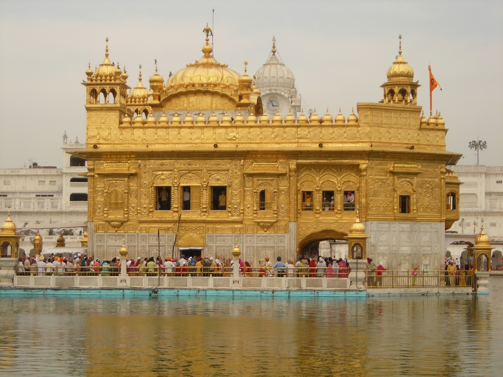
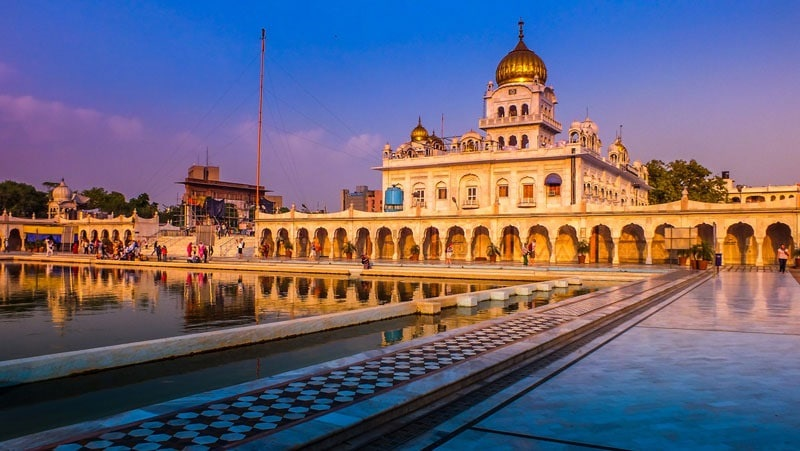
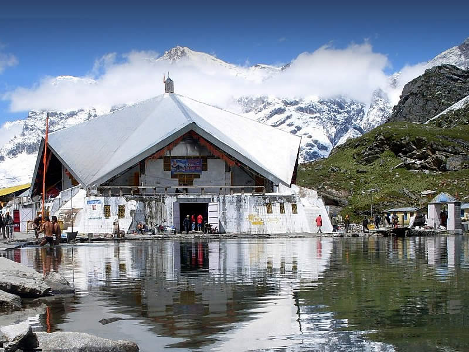

1. Gurudwara Hari Mandir Sahib, Punjab
Hari Mandir Sahib is the most famous Gurudwara in India. Located in Amritsar, this Gurudwar is popular by the name of Golden Temple. In 1588,
Guru Arjan laid the foundation stone of this sacred shrine and it was in 1604 that he placed the Holy Scripture called Adi Granth here. In
19th century, in order to protect this shrine, Maharaja Ranjit Singh covered the upper floors with the sheets of Gold, which later gave the
Gurudwara its modern name ‘Golden Temple’. There are four gates in Golden Temple that symbolizes that Sikhs accepts people from all walks
of life. Harmandir Sahib is not only has important as a religious structure but it has historical significance as well. Inside the gurdwara
are several memorial items that commemorate rich past of Sikh like events, saints, martyrs and includes commemorative inscriptions of all
the Sikh soldiers who died in World War I and II.

2. Gurudwara Bangla Sahib, New Delhi
Located in the heart of Delhi, Gurudwara Bangla Sahib is one of the imminent landmarks of the capital city. Built between the 17th
and the 18th century (In the 17th century it was a bungalow and in the 18th century new construction was done, this Gurudwara was
built to commemorate the stay of eighth Sikh Guru Har Krishan here. As mentioned earlier, this sacred edifice was once a bungalow
that was owned by Maharaja Jai Singh. Guru Har Krishan stayed here in 1664, when Delhi was under the influence of chicken pox and
cholera epidemic. He helped the people by giving them clean water from the nearby well. Unfortunately, Guru Har Krishan contracted
the illness and died here. In order to pay homage to Guru Har Krishan, Maharaja Jai Singh built a tank over the well, which is
believed to have healing property. Today, Gurudwara Bangla Sahib is one of the most famous Gurudwaras in Delhi.

3. Gurudwara Sri Hemkunt Sahib, Uttarakhand
Hemkunt Sahib is situated in Chamoli district of Uttarakhand and is known for its architecture. Dedicated to the tenth Sikh Guru, Guru Gobind
Sahib, Gurudwara Sri Hemkunt Sahib is located at an altitude of more than 4000mts above sea level. It is a star-shaped Gurudwara that has been
specially designed keeping in view the prevailing weather and altitude of the place. This particular Sikh worship place remains inaccessible
from October to April, and it is only in the month of May that the Sikh pilgrims start coming here. Nestled amidst lofty snow-clad mountains,
Sri Hemkund Sahib redefines spirituality.

4. Gurudwara Mandi, Himachal Pradesh
Gurudwara Guru Gobind Singh Ji is situated in Mandi, Himachal Pradesh. This Gurudwara stands as a symbol of the assurance given by Guru ji to
the Raja of Mandi. As per the story goes, Guru Gobind Singh was invited by Raja of Mandi and when the time for him to leave came, the King of
Mandi humbly asked Guru ji who will protect Mandi from Aurangzeb; in response to this question, Guru ji aimed his gun at a pitcher floating in
the river and fired, the pitcher instead of sinking kept floating. Seeing this, Guru Gobind assured the King of Mandi that like the pitcher
floated even after being shot at, so will Mandi remain safe from any attack. A Gurudwara was later constructed here, where this incident took
place and one can see some of the belongings of Guru ji here even today.